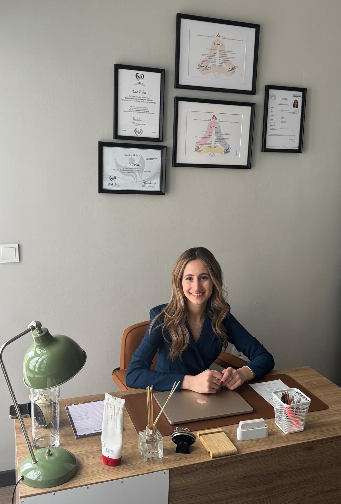

Düşünceden, gündelik hayata.
Düşünceleriniz, duygularınız ve davranışlarınız arasındaki ilişkileri birlikte ele alırız. Yaşadığınız güçlükleri anlamaya ve günlük yaşamda uygulanabilir adımlar geliştirmeye odaklanırız.
ANKARA, ÇANKAYA & ONLINE
Her şeyi tek başınıza çözmek
zorunda değilsiniz.
BDT ve mindfulness yaklaşımıyla, yetişkinler için yüz yüze ve online bireysel terapi.
Ücretsiz ön görüşmeÖnce tanışalım. Sorularınızı birlikte konuşalım.
BİRLİKTE KEŞFEDELİMBDT & mindfulness
Yüz yüze & online
Ücretsiz ön görüşme
01 — ÇALIŞMA ALANLARIM
Bazen adını koymak kolay değildir. Yaşadığınız güçlükleri, hayatınızdaki yerini ve ihtiyaçlarınızı birlikte anlamaya başlayabiliriz.
Her yolculuk kendine özgüdür.Kaygının günlük yaşamınızda kapladığı yeri ve zorlandığınız durumları birlikte ele almak.
Birlikte konuşalımİsteksizlik, duygusal zorlanmalar ve yaşamınıza etkilerini birlikte anlamak.
Birlikte konuşalımZorlayıcı yaşantıların bugüne yansımalarını, ihtiyaçlarınız ve hızınız doğrultusunda ele almak.
Birlikte konuşalımİlişkilerinizde tekrar eden örüntüleri ve zorlandığınız noktaları birlikte keşfetmek.
Birlikte konuşalımDuygularınızı tanımak ve onlarla baş etme yollarınız üzerine çalışmak.
Birlikte konuşalımŞimdiki anla, duygu ve düşüncelerinizle daha dikkatli ve yargılamadan temas kurmak.
Birlikte konuşalım02 — TERAPÖTİK YAKLAŞIMIM
Birbirinden ayrı değil,
birbiriyle ilişkili.
Düşünceleriniz, duygularınız ve davranışlarınız arasındaki ilişkileri birlikte ele alırız. Yaşadığınız güçlükleri anlamaya ve günlük yaşamda uygulanabilir adımlar geliştirmeye odaklanırız.
Duygu ve düşüncelerinize yargılamadan yaklaşmayı çalışırız. Farkındalık uygulamalarını sizin ihtiyaçlarınıza göre terapi sürecine dahil ederiz.

03 — TANIŞALIM
Her insanın hikâyesi farklı.
Birlikte kuracağımız yol da öyle.
Yetişkinlerle Ankara’da yüz yüze ve online bireysel psikoterapi seansları yürütüyorum. Her kişinin deneyimini kendi koşulları içinde anlamayı ve birlikte çalışmayı önemsiyorum.
TOBB Ekonomi ve Teknoloji Üniversitesi
Psikoloji lisansı · Tezli Klinik Psikoloji yüksek lisansıDATEM · Prof. Dr. Ebru Şalcıoğlu
BDT · BDT’de Mindfulness UygulamalarıPsikoloji lisans eğitimimi onur öğrencisi olarak tamamladım. Yüksek lisans eğitimime TÜBİTAK bursiyeri olarak devam ettim; klinik becerilerimi süpervizyonlar eşliğinde geliştirdim. Tez çalışmamda çocukluk çağı akran zorbalığı, fiziksel görünüme dayalı sosyal karşılaştırma ve öz şefkat arasındaki ilişkiyi ele aldım. Eğitim sürecinde Şizofreni Dernekleri Federasyonu ve Bilkent Şehir Hastanesi dahil farklı kurumlarda staj deneyimi edindim.
GÖRÜŞME SEÇENEKLERİ
04 — NASIL BAŞLARIZ?
Karar vermeden önce tanışabilir, sorularınızı paylaşabilir ve çalışma biçimim hakkında bilgi alabilirsiniz.
WhatsApp, telefon veya e-posta ile ücretsiz ön görüşme için bilgi isteyin.
İhtiyaçlarınızı ve beklentilerinizi konuşalım; süreç, ücret ve randevu koşullarını netleştirelim.
Devam etmek isterseniz, online veya yüz yüze seans için uygun zamanı belirleyelim.
05 — MERAK EDİLENLER
Sorularınız için buradayım.
Yanıtını bulamadığınız bir konu varsa
doğrudan bana ulaşabilirsiniz.
WhatsApp, telefon veya e-posta aracılığıyla iletişime geçebilirsiniz. Ön görüşmenin zamanı ve nasıl yapılacağı ilk iletişimde netleştirilir.
Evet. Yetişkinlerle bireysel seanslar Ankara Çankaya’daki ofiste yüz yüze veya online olarak yürütülür. Hangi seçeneğin sizin için uygun olduğunu birlikte değerlendirebiliriz.
Güncel ücret, seans süresi, sıklığı ve randevu koşulları iletişime geçtiğinizde paylaşılır. Sürecin planı ihtiyaçlarınız doğrultusunda birlikte belirlenir.
Sizi terapiye getiren güçlükleri ve beklentilerinizi kendi hızınızda paylaşabilirsiniz. Her şeyi ilk görüşmede anlatmış olmanız gerekmez; süreç ve çalışma çerçevesi de birlikte ele alınır.
06 — İLETİŞİM & RANDEVU
Ücretsiz ön görüşme için bana ulaşın.
Birlikte, size uygun başlangıcı konuşalım.
Remzi Oğuz Arık Mahallesi
John F. Kennedy Caddesi 18/9
Çankaya / Ankara